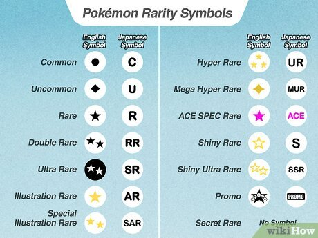
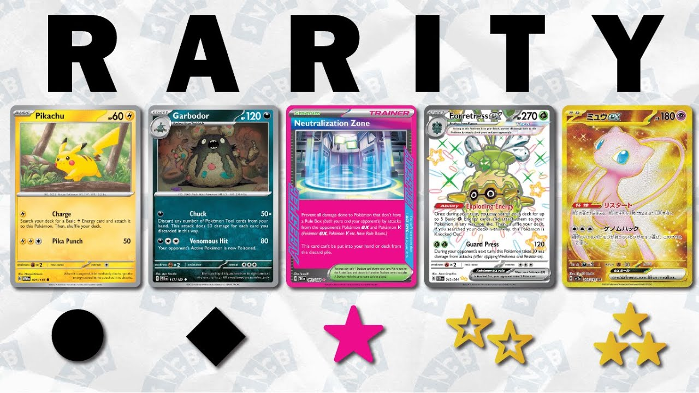

Rarity in the Pokémon Trading Card Game (TCG) refers to how uncommon a card is within a set. Cards are typically classified as common, uncommon, rare, holo rare, and ultra rare. As well as having special illustrations that can make certain cards more visually appealing and sought after.


The rarity of a card can significantly affect its value and desirability among collectors and players alike.